Applications of Instance-Based Learning Theory: Using the SpeedyIBL Library to Construct Computational Models
CLIHC 2023, Puebla, Mexico
Carnegie Mellon University
University of Dayton
Carnegie Mellon University
Agenda
- Introduction to Instance-Based Learning Theory
- Introduction to the SpeedyIBL Library with a Binary Choice Task Example
- Building an IBL Model for the Iowa Gambling Task
- Conclusion and Additional Applications
Introduction to Instance-Based Learning Theory
Complex, Dynamic Decision Making (DDM)

- Dynamic and sequential multi-attribute decisions that are interdependent over-time
High uncertainty and change at different time scales
Dynamic allocation of limited resources (time, drones, people)
There is not enough time for considering all alternatives before making a choice
Human cognitive abilities (attention, memory) are limited
Machine AI and Complex Societal DDM Problems
- Machine AI is supporting complex DDM problems in multiple ways — aggregating data, detecting patterns, and forecasting and projecting events based on data
- But often there is not enough data, particularly regarding high-level decisions
Requires a deep understanding of context, consideration of multiple and possibly conflicting factors and their consequences
The incorporation of ethical and moral trade-offs
The ultimate responsibility for complex decisions lies, and will continue to lie, with humans.
Why Should Machines Learn?
Artificial intelligence has two goals.
First, AI is directed toward getting computers to be smart and do smart things so that human beings don’t have to do them.
And second, AI (sometimes called cognitive simulation, or information processing psychology) is also directed at using computers to simulate human beings, so that we can find out how humans work and perhaps can help them to be a little better in their work.
Cognitive AI
Cognitively-plausible algorithms that emulate human decision making
Based on cognitive theory: explain how humans make dynamic decisions, including the prediction of cognitive biases and errors in the absence of data
Dynamic actionable models: able to learn and adapt to changes independently to predict human decisions
Can represent human experience and be synchronized with human actions
Can become collaborators with humans in teams
Building Human-Like Artificial Agents using IBLT
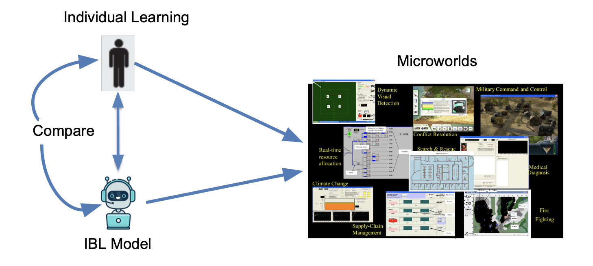- Demonstrate that IBLT is a GENERAL theory of Dynamic Decision Making and can replicate human decisions from experience (DfE)
Using Microworlds in Laboratory Experiments to Study DDM
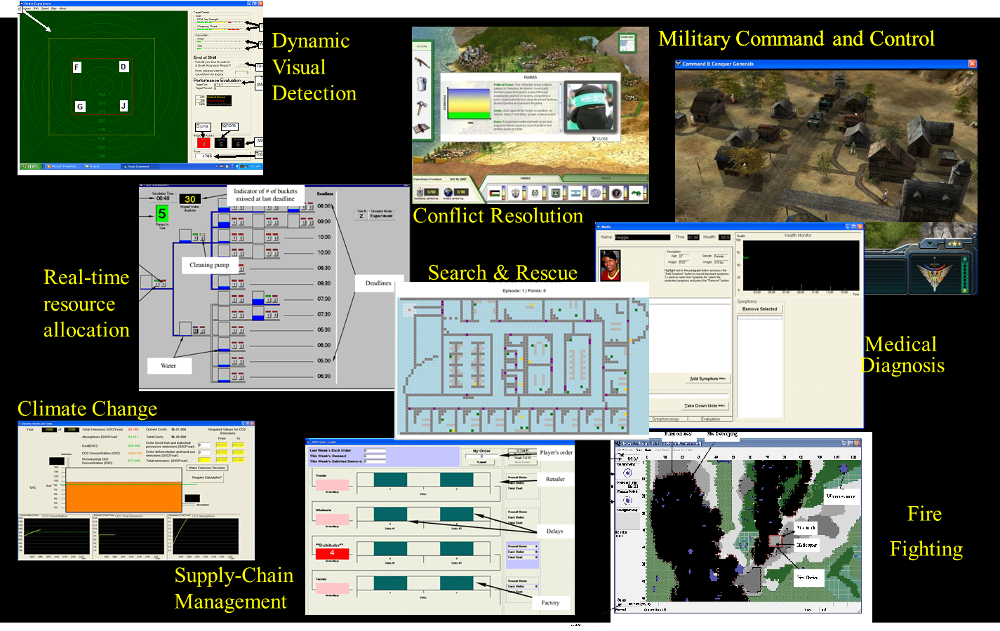Approach: Cognitive Architectures

Unified Theories of Cognition
A single system (mind) produces all aspects of human behavior
Representation of cognitive steps in performing a task
Explain how all the components of the mind worked to produce coherent cognition.
ACT-R: A unified theory of cognition (Anderson & Lebiere, 1998)
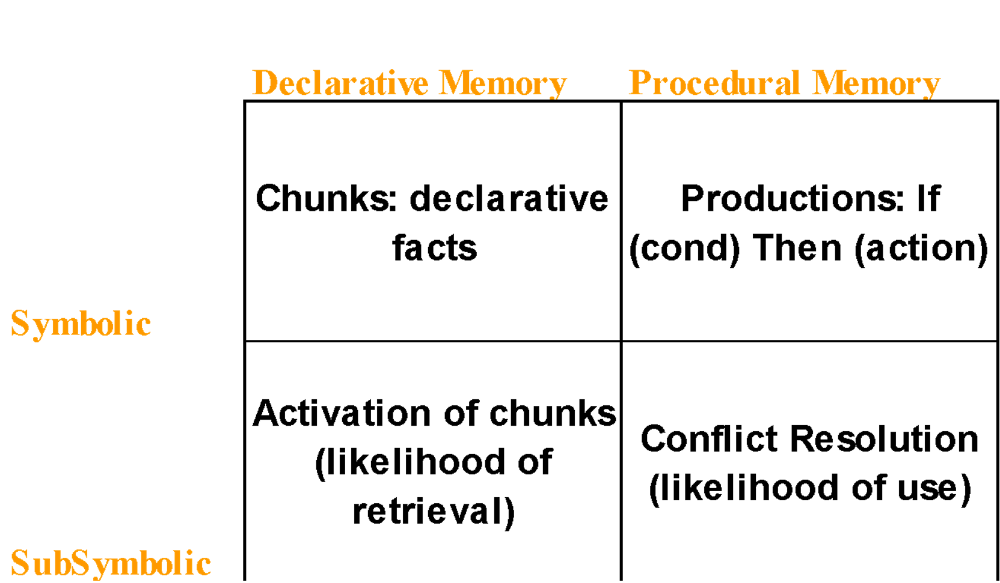
Symbolic representations of Declarative and Procedural Memories
Statistical/Mathematical Mechanisms for processing, accessing, and retrieving memories, and learning and adapting behavior
IBLT: Cognitive Algorithm for Dynamic Decision Making (Gonzalez et al., 2003)
Decisions are made by recognizing similar situations in decisions made in the past
Evaluating new actions according to the utility of past decisions
Mentally exploring the value of the alternatives sequentially
Executing a choice that has the maximum “expected utility”
Re-evaluating the utility of past decisions based on feedback from environment
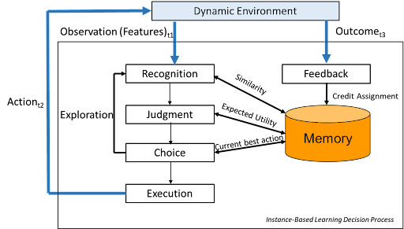
Representation of Decisions
Decisions are stored over-time in memory (Instances) consisting of Contextual features, Action, Outcome (Utility)
For each potential Action instances are Blended accounting for similarity, to create an expected utility
The Action with the highest Blended Value is executed, and new instances are created.
The Blended Value is updated with an experienced outcome through feedback

IBLT Mathematical Mechanisms
\(i = \text{instance}\)
\(k = \text{choice option}\)
\(t = \text{time}\)
\(j = \text{feature}\)
Functions and Parameters
\(\xi_{ik_it} = \text{Draw from distribution}\)
\(\alpha = \text{Mismatch Penalty}\)
\(\sigma = \text{Noise}\)
\(\delta = \text{Decay}\)
\(\tau = \text{Temperature}\)
IBLT Mathematical Mechanisms
ACT-R’s Activation Equation
\[ \Lambda_{ik_it} = \ln{\left(\sum\limits_{t' \in T_{ik_it} }(t-t')^{-d}\right)} + \] \[ \alpha\sum\limits{j}Sim_j(f_j^k, f_j^{k_i}) + \] \[ \sigma\ln{\frac{1-\xi_{ik_it}}{\xi_{ik_it}}} \]
Probability of Retrieval
\[ P_{i k_i t} = \frac{e^{\Lambda_{ik_it}/\tau}}{\sum_{j = 1}^{n_{kt}}e^{\Lambda_{jk_jt}/\tau}} \]
Blended Value
\[ V_{kt} = \sum_{i=1}^{n_{kt}}P_{ik_it}x_{i k_i t} \]
Action Selection
\[ a_l = \arg\max_{a\in A} V_{(s_l,a),t} \]
Introduction to the SpeedyIBL Library with a Binary Choice Task Example
SpeedyIBL Library (Nguyen et al., 2022)
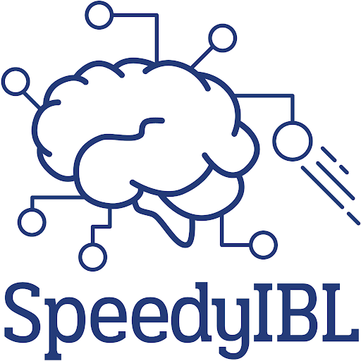Motivation
An open-source, efficient library facilitates the implementation of models based on IBLT mechanisms
Demonstrate how to use SpeedyIBL to handle a diverse taxonomy of individual and multiagent decision-making tasks
Demonstrations
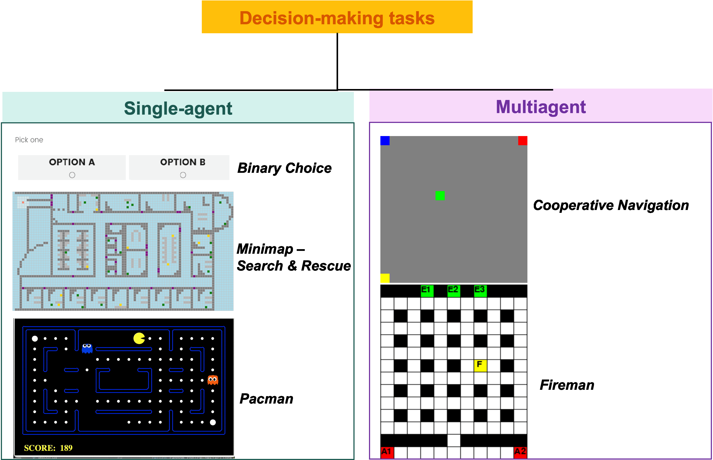Notebook: 01_Introduction_SpeedyIBL.ipynb
Installing SpeedyIBL Library
Using online Jupyter Notebook such as Google Colab:
Installing SpeedyIBL Library
Running locally:
- Must have Python 3 installed
- (suggestion) Create a virtual Python Environment by running the following commands in your shell.
An IBL Agent with SpeedyIBL
Import the class Agent from speedyibl
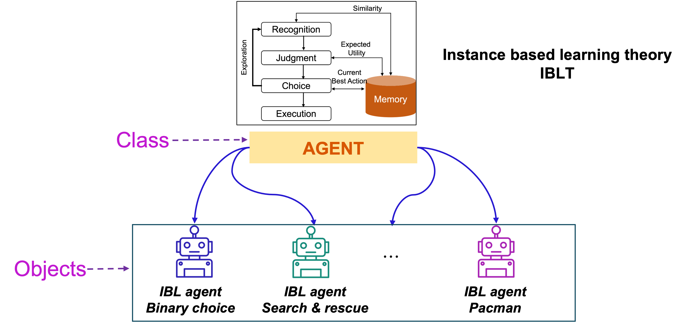Attributes (properties) of the class Agent
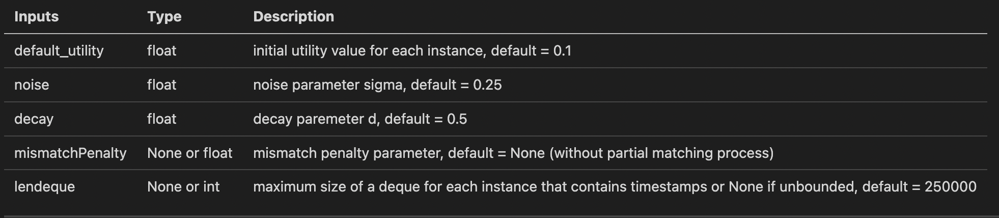To view the list of attributes:
Functions (methods) of the class Agent
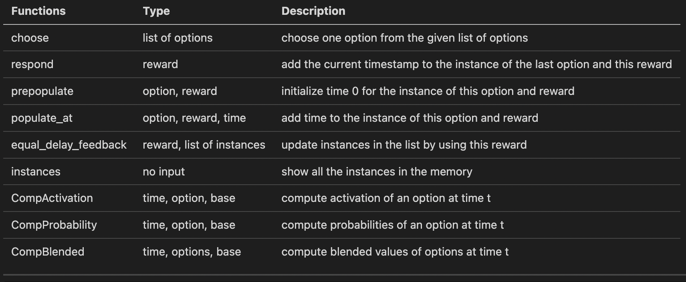To display the list of methods:
['CompActivation', 'CompBlended', 'CompProbability', '__class__', '__delattr__', '__dict__', '__dir__', '__doc__', '__eq__', '__format__', '__ge__', '__getattribute__', '__gt__', '__hash__', '__init__', '__init_subclass__', '__le__', '__lt__', '__module__', '__ne__', '__new__', '__reduce__', '__reduce_ex__', '__repr__', '__setattr__', '__sizeof__', '__str__', '__subclasshook__', '__weakref__', 'choose', 'equal_delay_feedback', 'get_similarity', 'instances', 'make_noise', 'mkid', 'populate_at', 'prepopulate', 'reset', 'respond', 'similarity']mappingproxy({'__module__': 'speedyibl.speedyibl', 'mkid': 0, '__init__': <function Agent.__init__ at 0x10e233430>, 'respond': <function Agent.respond at 0x10e2cb1f0>, 'populate_at': <function Agent.populate_at at 0x10e2cb280>, 'make_noise': <function Agent.make_noise at 0x10e2cb310>, 'choose': <function Agent.choose at 0x10e2cb3a0>, 'reset': <function Agent.reset at 0x10e2cb430>, 'instances': <function Agent.instances at 0x10e2cb4c0>, 'prepopulate': <function Agent.prepopulate at 0x10e2cb550>, 'similarity': <function Agent.similarity at 0x10e2cb5e0>, 'get_similarity': <function Agent.get_similarity at 0x10e2cb670>, 'equal_delay_feedback': <function Agent.equal_delay_feedback at 0x10e2cb700>, 'CompActivation': <function Agent.CompActivation at 0x10e2cb790>, 'CompProbability': <function Agent.CompProbability at 0x10e2cb820>, 'CompBlended': <function Agent.CompBlended at 0x10e2cb8b0>, '__dict__': <attribute '__dict__' of 'Agent' objects>, '__weakref__': <attribute '__weakref__' of 'Agent' objects>, '__doc__': None})SpeedyIBL for Binary Choice Task
Notebook: 02_Exercise_BinaryChoice.ipynb
The Binary Choice Task
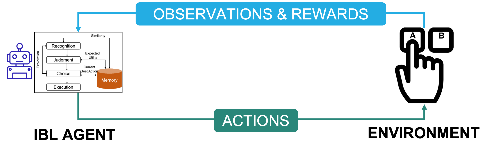Choose one of two options: Option A or Option B
One option is SAFE, always yielding a fixed medium outcome (3)
One option is RISKY, yielding a high outcome (4) with probability of 0.8, and a low outcome (0) with the complementary probability of 0.2
Single-state with immediate feedback task
Create an Environment for the Binary Choice Task
Defining Options
Defining Reward
Putting Together in Class BinaryChoice
Declare an Environment
Building an Agent for the Binary Choice Task
Create an IBL agent for the binary choice task:
Interactions Between the Agent and the Task: Actions
Choose Option
- Make the agent choose one of two options:
Interactions Between the Agent and the Task: Observations and Rewards
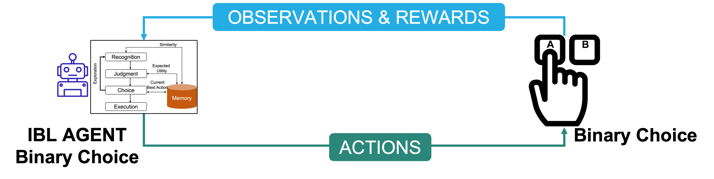Observe Reward
View the Agent’s Memory
- To see how instances are stored in the memory
- Example:
IBL Agent’s Decision Mechanisms
Activation of Each Instance
Probability of Retrieving Each Instance
Blended Value for Each Option
Simulating Choices for Many Rounds
- Let the agent play 100 rounds (trials) for the binary choice task
- Each round includes choosing one option, observing the reward, and storing the instance
Simulating Choices for Many Rounds: Code
rounds = 100 # number of rounds (trials)
pmax = []
for i in range(rounds):
choice = agent.choose(env.options) # choose one option from the list of options
r = env.reward(choice) # observe the reward
agent.respond(r) # store the instance
pmax.append(choice == 'B')
print(f"P(Max): {sum(pmax)/rounds}")P(Max): 0.97Simulating Choices for Many Runs
- Let’s have 500 runs (500 subjects) playing 100 rounds of the task
Simulating Choices for Many Runs: Code
runs = 500
rounds = 100 # number of rounds (trials)
pmax_per_run = []
for j in range(runs):
pmax = []
agent.reset() # clear the memory for a new run
for i in range(rounds):
choice = agent.choose(env.options) # choose one option from the list of options
r = env.reward(choice) # observe the reward
agent.respond(r) # store the instance
pmax.append(choice == 'B')
pmax_per_run.append(pmax)Plotting Performance (PMAX) over Rounds
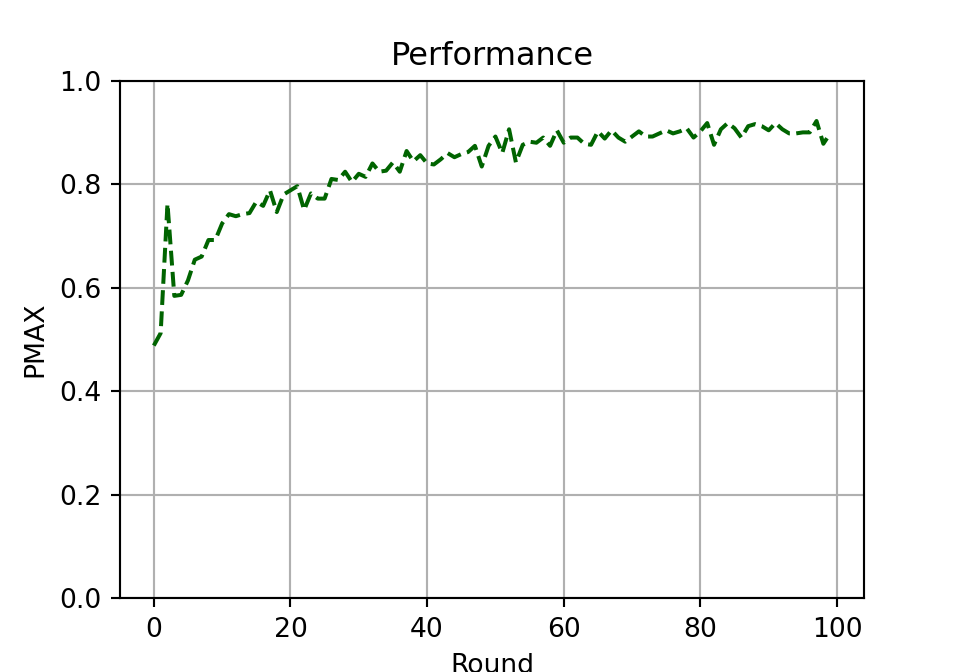Exercise 1
Simulate the effect of the IBL model inputs in the Binary Choice Task
default_utilityof 3,noiseof 0.25, anddecayof 0.5default_utilityof 4.4,noiseof 0.5, anddecayof 0.8
Exercise 2
The table below from (Hertwig et al., 2004) presents the proportion of maximization obtained from experimentation in Humans
Simulate the Problem 5
Compare the IBL agents’ PMAX vs. Humans’ PMAX (Pmax2 column)
Building an IBL Model for the Iowa Gambling Task
Iowa Gambling Task History
Developed by researchers to study risky decision making (Bechara et al., 1994)
Widely used to study human cognition
Iowa Gambling Task Demo
To play the demo of game: https://www.psytoolkit.org/experiment-library/igt.html
4 decks of cards (A, B, C, and D).
Participants started with a “loan” of $2000 and were told to make a profit.
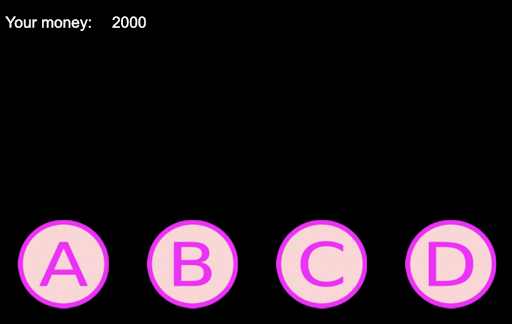
Iowa Gambling Task: Choices
Participants had to choose 100 cards in total, one at the time. Each time they choose a card, they get feedback about winning and/or losing some money.
They did not know what each card would yield in advance (i.e., a lottery).
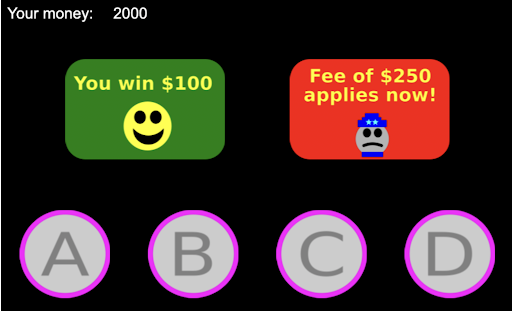
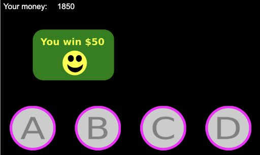
Task Environment
Decks A and B always yielded $100
Decks C and D always yielded $50
For each card chosen, there is a 50% chance of having to pay a penalty as well. For decks A and B, the penalty is $250, whereas for decks C and D it is $50.
Notebook: 03_Exercise_IowaGambling.ipynb
Steps
- Install and import
speedyibl - Define an IBL agent
- Define list of options
- Choose option from list of options
- Store the observed reward to memory of the agent
Steps
- Run the simulation and observe the plots for
default_utility=110anddefault_utility=10 - Vary the noise and decay parameters and plot the
PMAXandAverageRewardover rounds withdefault_utility=110 - Run the simulation for varied parameter values and plot results
Notebook: 04_Solution_IowaGambling.ipynb
Conclusion
Additional Applications
Gridworld
A sequential decision making problem wherein a decision maker navigates through a grid by making sequential decisions about which actions to take (Up, Down, Left, Right) to search for a target and avoid obstacles
Dimension of environment: 3 x 4 grid that contains an obstacle (black cell)
Decision maker starts at an initial position (marked Start) and has a 25-step limit
One target which yields 1 point if the decision maker found it
IBL Model for Gridworld Environment
- Delayed feedback as a result of sequence of choices as opposed to a single choice
Ms. Pacman from GymAI
Discussion
We would be happy to hear your feedback on this workshop. What worked well, and what could we improve upon?
Thank you!
Sponsors:
DDMLab Website: www.cmu.edu/ddmlab
Interested in building IBL models?